~96%
of high-grade serous ovarian carcinomas carry a TP53 mutation.
TP53 mutatedNot mutated
Every slide carries three control lines with known p53 staining. The software grades every tumor nucleus against them, and the pathologist reviews and signs.
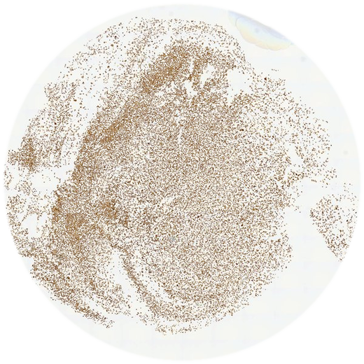
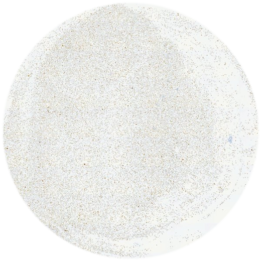
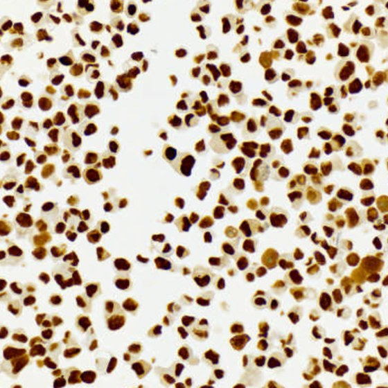
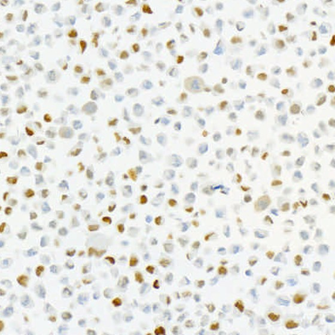
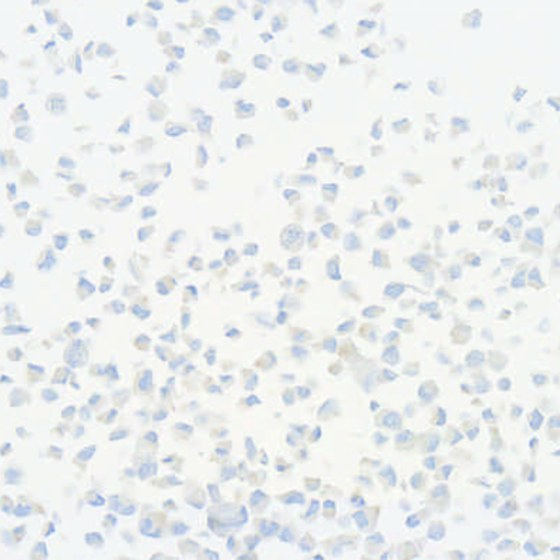
p53 staining is one of the clearest signals in gynecologic pathology, when it is read the same way every time.
of high-grade serous ovarian carcinomas carry a TP53 mutation.
of cases are classified correctly by p53 immunohistochemistry when the stain and the read follow an optimized protocol.
is the agreement (Fleiss κ) between readers of mixed experience scoring the same p53 slides. Moderate to substantial, short of reliable.
On every slide, stained with the tissue, so each read is anchored to the same three reference patterns. Then every tumor nucleus is graded against them.
Sources: Cancer Genome Atlas Research Network, Nature 2011 (TP53 in high-grade serous carcinoma); Köbel et al., J Pathol Clin Res 2016 (optimized p53 IHC); Hussain, Howard, Syed, Allgäuer, Gong, Xing & Andersen, Int J Gynecol Pathol 2019;38(5):449–458, doi 10.1097/PGP.0000000000000537 (the cell-line p53 control panel); Karathanasis & Andersen, Lab Invest 106 (2026) 104770, doi 10.1016/j.labinv.2025.104770 (USCAP 2026 abstract: the machine-learning read with cell-line controls).
The lab and the pathologist stay in charge of every step. The software does the counting. Or watch it: the whole read in 80 seconds.
Whole-slide images from the scanner. The control lines sit at the top of the p53 slide.
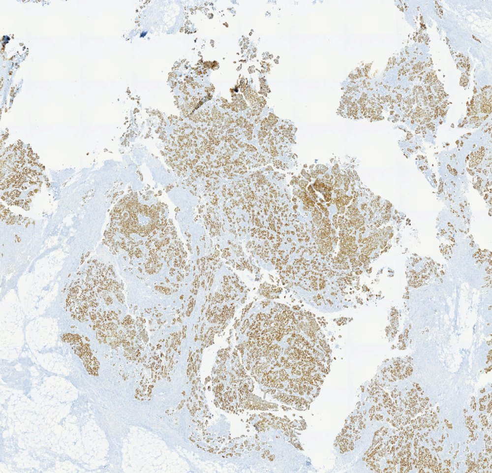
Tumor regionOne click per control line, one box over the tumor.
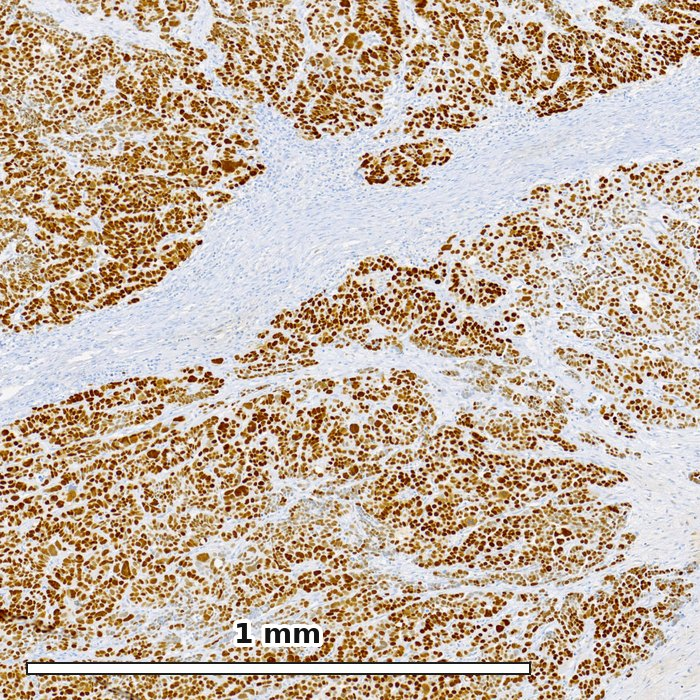
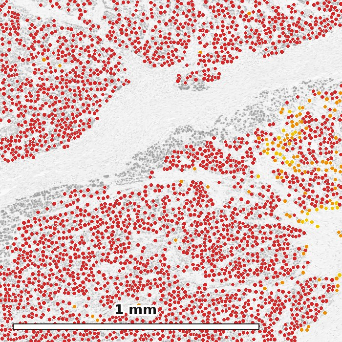
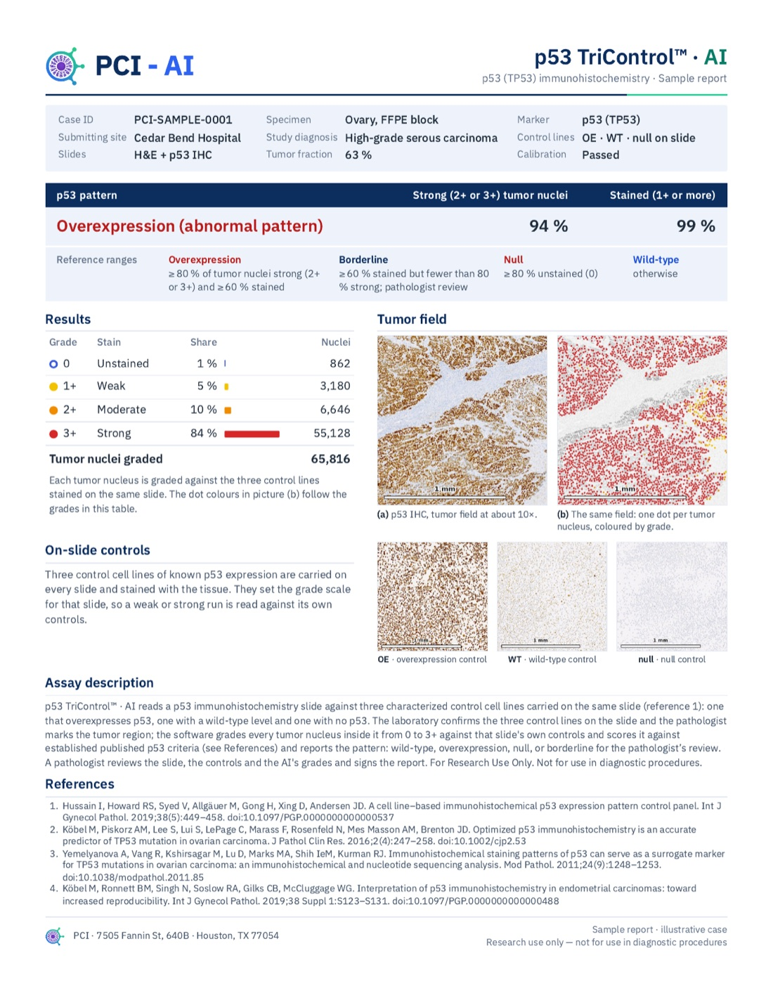
✓ SignedThe controls are cut and stained with the tissue, on the same glass and in the same run.
Three control lines of known p53 staining go through the stain with the tissue and set that slide's grade scale.
The lab confirms the controls and the pathologist marks the tumor. The software never decides where to look.
Tens of thousands of tumor nuclei graded per case, each on the slide's own scale, with a map of where they are.
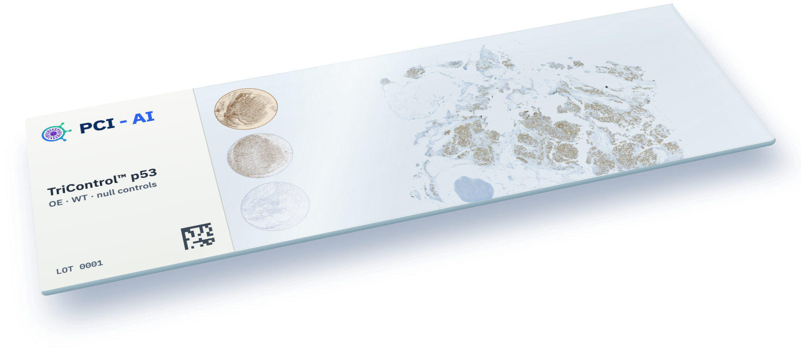
Cell-line control blocks to cut and stain alongside patient tissue. The same controls the software reads on every slide.
The same approach for the mismatch-repair proteins: controls on the slide, every tumor nucleus graded, a report to sign.
MLH1 · PMS2 · MSH2 · MSH6
Walk through the pathologist’s reading room and read the sample report.